How the 55th District's volunteer site works, for volunteers and for the people running it, with screenshots
Written by Scott Sauyet, Andover DTC · For DTC chairs · Not for public distribution
The 55th District Democrats (Andover, Bolton, Glastonbury, Hebron and Marlborough) have been running a 26-week letters-to-the-editor and social media campaign for Ellen Paul out of a small private website called Speak Up. This page shows what a volunteer sees, what the coordinator does each week, and what it took to build, so you can judge whether a general-purpose version would be worth building for other campaigns after the election.
Why
Every campaign asks volunteers to write letters to the editor and to post on social media, and every campaign runs into the same problems: people do not know what to write about this week, they do not know the paper’s rules, two people send nearly the same letter, the coordinator spends the week nagging, and the one volunteer who would actually write has no idea where to start.
Speak Up is our answer for one district and one race. Each week has a topic. Behind the topic sit sample letters in ten different voices, short Facebook and Nextdoor drafts, square image cards, the talking points, and the citations. A volunteer signs in with a link sent to their email, is walked through one decision at a time, claims a letter so nobody else sends it, and is told exactly where to send it and by when. The coordinator sees the status of every letter, can add volunteers and letters from a web form, and lets a weekly email go out on its own.
It has worked well enough for us that I want to know whether it is worth turning into something other town committees and campaigns could use. The last section has the questions I would like your reactions to. Everything before it is a tour.
About the screenshots. The app is private, so the screenshots below were taken against a local copy with made-up volunteer names (Pat Volunteer, Jane from Hebron, Sam Chair). The content, layout and behavior are exactly what is live at 55th.ahmdems.org/speak-up. The sign-in page is the live one.
At a glance
| Campaign | 26 weeks, May 6 through Election Day, in six themed “waves” |
| Each week | one topic, a target number of letters per paper, sample letters, post drafts, image cards, talking points, citations |
| Volunteers | about 95 on the roster across five towns, eight of them admins (the town point people) |
| Sample letters | 119, written in ten named “personas” (the Prosecutor, the Storyteller, the Reluctant Critic, and so on) |
| Social | 77 Facebook and Nextdoor post drafts and 137 square image cards, each card in five color schemes |
| Papers | the four that cover the district, each with its word limit, per-writer cap, deadline and submission address |
| Weekly email | Wednesdays at 4 pm, staged in advance, sends itself unless held |
| Offline volunteers | a large-print two-sided sheet and a folded letter-writing-party booklet, per week and per town |
| Hosting | ordinary shared hosting (the DTC’s existing web host), no database, no monthly software cost |
Sign-in
There are no passwords. A volunteer types their email, and if it is on the roster they get a one-time sign-in link that is good for a few minutes and signs in that device. The page says the same thing whether or not the address is on the list, so it never reveals who is a volunteer. Removing someone from the roster locks them out on their next visit. The whole site sits behind this gate, not just a landing page, because it carries opposition research and strategy notes that are not meant to be public.
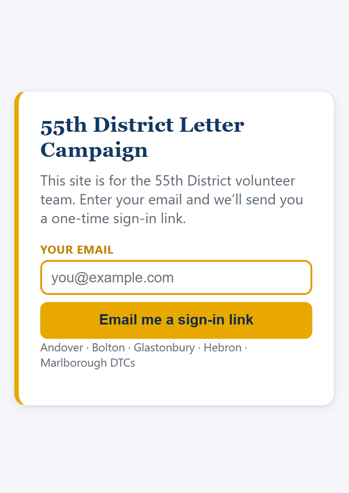
Guided path
Most volunteers arrive from a text or the weekly email, on a phone, meaning to do one thing once. So the front door is a wizard, not a dashboard. It opens on the current week and the week’s topic, and asks a single question at a time. Every step is in the page address, so the phone’s Back button works, the breadcrumb at the top jumps back to any earlier step, and a coordinator can text someone a link that lands them three steps in.
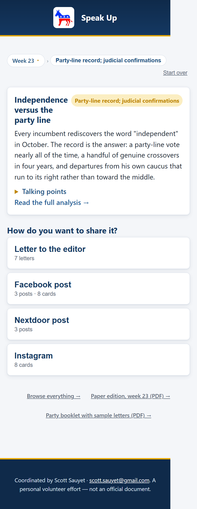
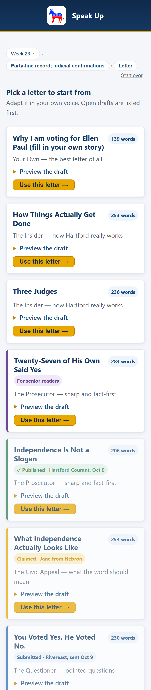
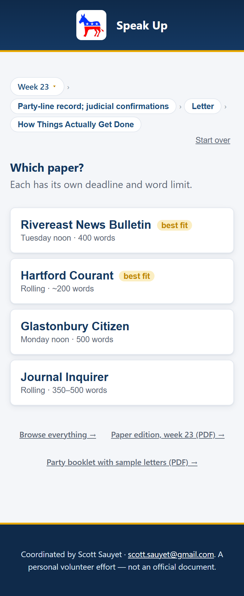
The last screen is the letter itself plus everything needed to send it: the paper’s email address, deadline, word limit and per-writer cap, the paper’s quirks (“send as a .txt or .doc attachment, not a PDF”), and the talking points and writing advice folded away underneath.
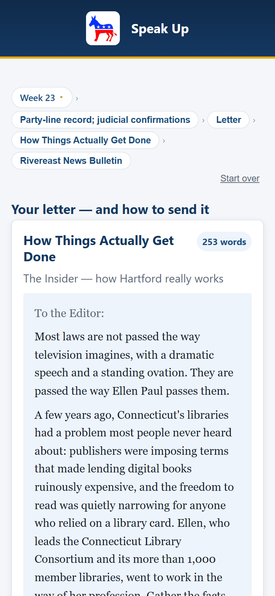
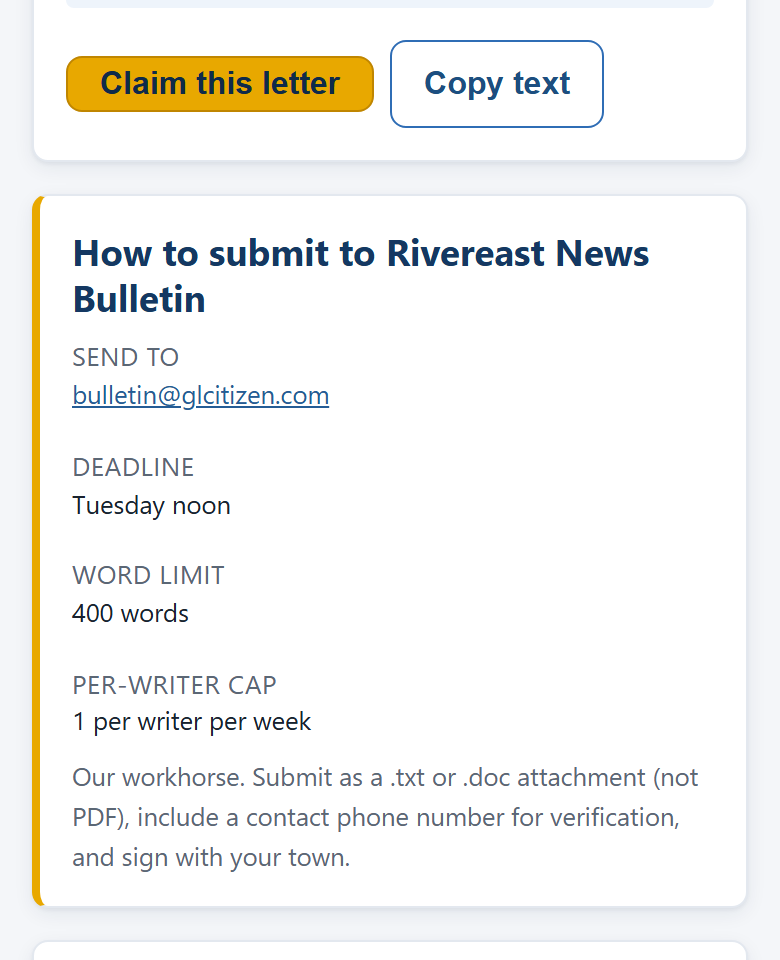
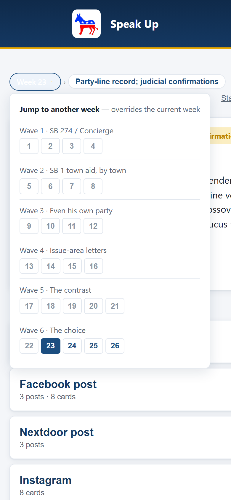
Claims. A sample letter is scarce: one writer, one paper. So letters carry a status that everyone sees. Open means take it. Claimed shows the writer’s name. Submitted and Published carry a note like “Rivereast, Oct 9”. Only the writer who claimed a letter, or an admin, can move it forward or release it, and the server refuses a claim on a letter someone else grabbed a moment earlier. Volunteers are asked to adapt the draft in their own voice, not send it as is, and the sample letters are written to make that easy.
Social
A letter reaches people who read the paper; a post reaches everyone else. The same wizard handles Facebook, Nextdoor and Instagram. A post or a card is not scarce, since twenty people should share the same one, so there is nothing to claim: the actions are “copy text” and “download image”.
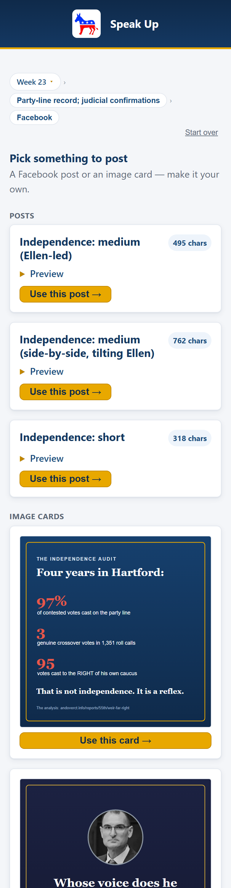
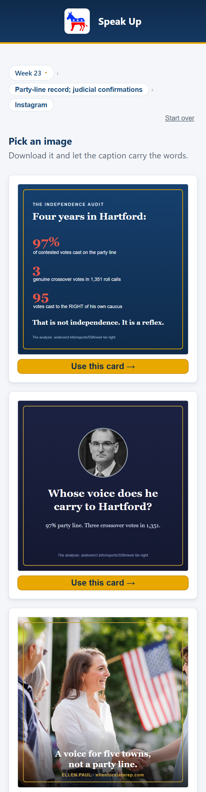
Each post comes with a short publishing guide for the platform (“put the source link in the first comment, not the post, so Facebook does not throttle it”), and a pool of citations to rotate through so a dozen volunteers do not all post the same link. Every factual claim in a card or post points at a public source: a roll-call record, a news story, or one of our public analyses.
Dashboard
The wizard is the front door, but a link on every screen opens the full dashboard for the returning volunteer, the town point person, or anyone who wants to survey the whole week. It is a different shape: the 26 weeks across the top grouped by wave, the week’s ask and open slots, two tabs for letters and social, and a reference rail with the papers’ rules, the writing advice, and the evidence.
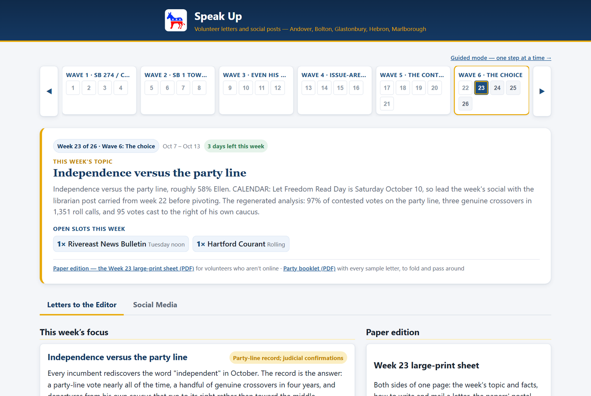
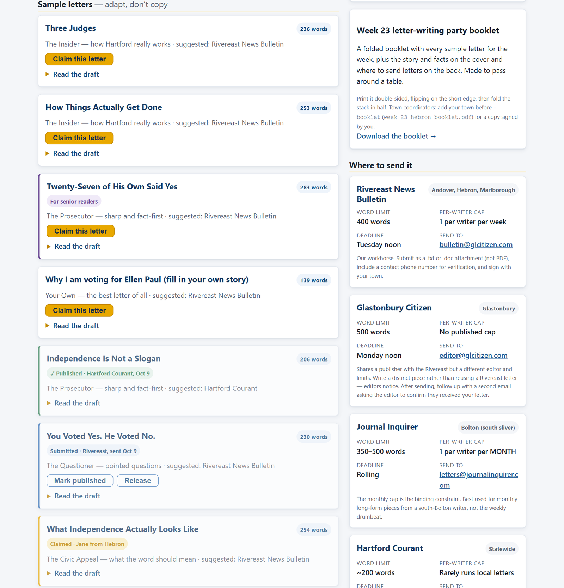
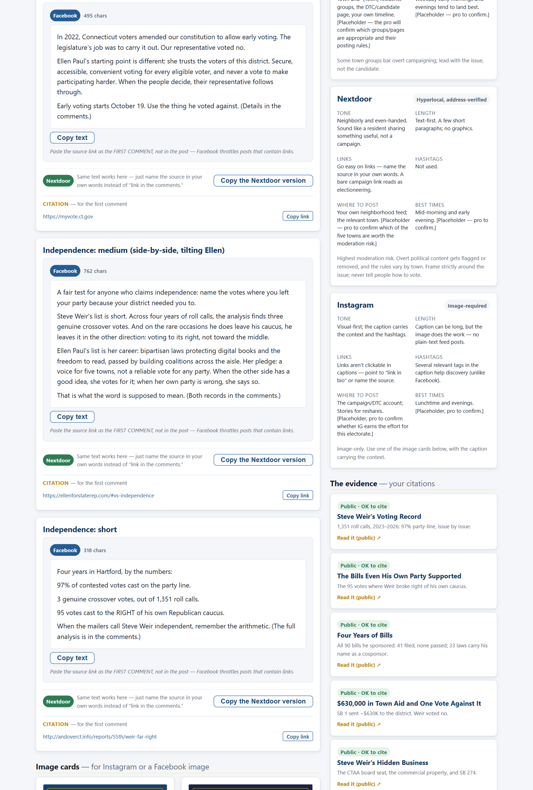
Volunteers get one email a week, Wednesday afternoon, timed so a writer has the weekend before the papers’ Monday and Tuesday deadlines. It is deliberately thin: the week’s theme, the open slots with deadlines and addresses, the topic summary and talking points, one shareable card, and a button into the app. Anything that will change during the week lives behind the button, not in the email. There is a one-click unsubscribe, which drops the person from the email list but not from the site.
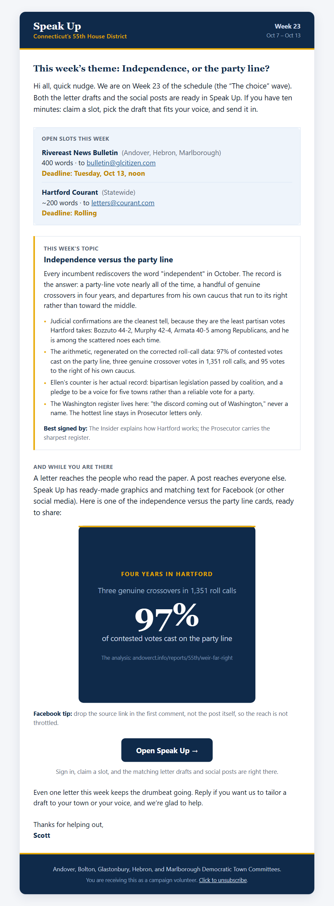
Some of our best writers have no internet. One is 88, sharp, and had her internet taken away by her family after a run of scams. So every week is also produced as a single sheet of paper in large type: the week’s story and facts on the front, how to write and mail a letter and the papers’ postal addresses on the back, with every date and address spelled out because the reader cannot follow a link. It is handed out a week ahead so a mailed letter still beats the deadline. There is a version per town, signed by that town’s coordinator with their phone number.
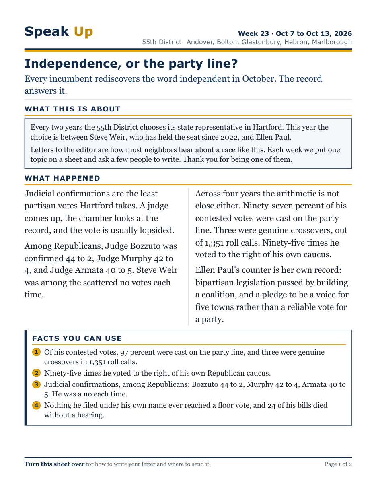
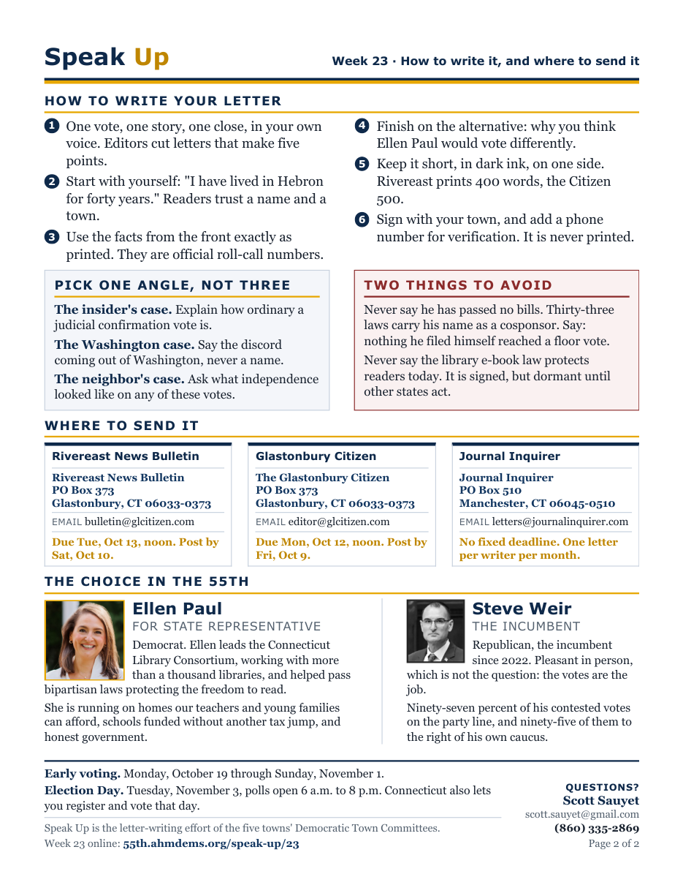
For letter-writing parties there is a folded booklet: a cover with the week’s story, one sample letter per page, a make-your-own page, and a back cover with where to send things.
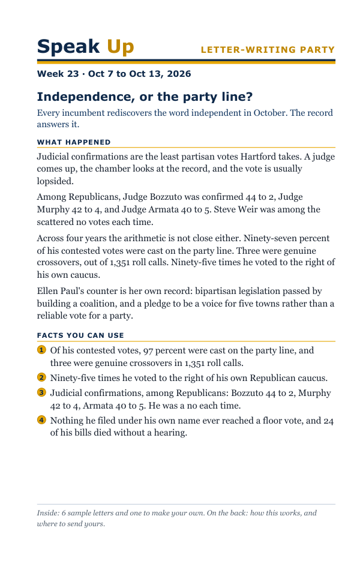
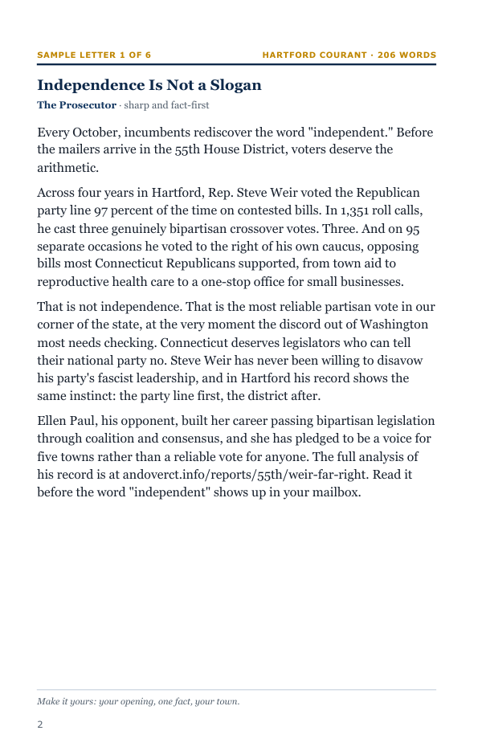
Admin
Content. The coordinator writes the week: the topic summary and talking points, the sample letters (five or six a week, in different personas), the post drafts, the cards. That is the real work, and no tool removes it. The schedule itself (which week, which topic, how many letters in which paper) is a single plain-text list, and each sample letter is its own plain-text file with a few lines at the top (title, persona, topic, suggested paper). A short build step on the coordinator’s laptop turns those into what the site serves, and the site’s own guide is written so that a non-programmer can update a week.
Admin tools in the browser. Town point people sign in like anyone else, but see an “Admin tools” link. From there they can add a volunteer (who can sign in immediately), add a sample letter (live at once, no rebuild), and upload images or PDFs for the social grid (a PDF, say a mailer, is split into page images in the browser so each page becomes a postable image). Admins can also release or reopen anyone’s claim.
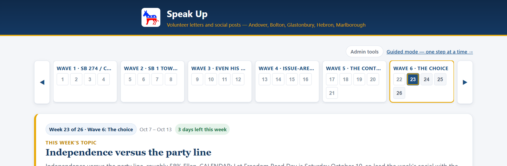
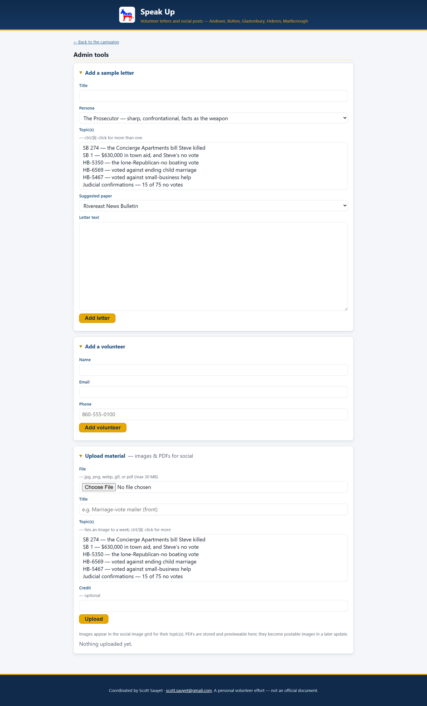
The email queue. The weekly email is generated on the laptop and staged onto the server weeks ahead; right now every remaining week is already queued. An outside scheduler pings the server once an hour and any email that has come due goes out, unless an admin has held or cancelled it. The queue page works from a phone: preview, edit the subject or the opening paragraph, reschedule, hold, cancel, or send now. The admin gets a heads-up email a day before each send, so a quick “hold” from a phone is enough to stop a week. This was designed around a two-week vacation with no laptop, and it held up.
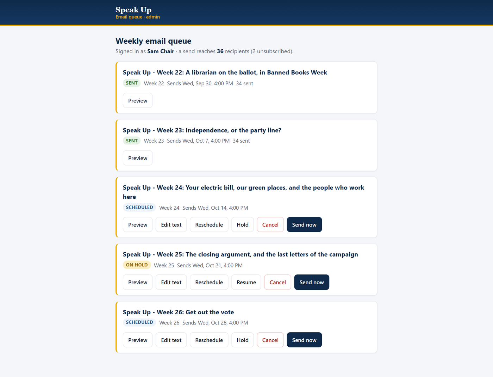
Backups. The live state (claims, web-added letters, the roster) is a handful of small files on the server; a one-command backup pulls them down, encrypted, into the project.
Tech
This matters for the “could others use it” question, because the answer is that it runs on almost nothing.
It was built by one person between the end of May and now, alongside writing much of the content. A second campaign would not start from zero, but see the sections that follow.
Limits
Unused
Some of this was built on a guess about how other people would work, and the guess was wrong. The admin forms are the clearest case. Eight town point people can add a volunteer or a sample letter from a phone, and as far as I can tell I am the only one who ever has. The roster grew through me, and so did the letters. The same goes for the content more broadly: the hope was that several writers would contribute drafts in their own personas, and a few did, but the great majority of the 119 letters and 77 posts came from one keyboard.
That is not a complaint about the volunteers. It is a lesson about the tool. The parts that saw heavy use are the ones a volunteer meets on the way to doing one thing: the sign-in link, the wizard, the claim button, the weekly email, the paper sheet. The parts built for a distributed team of coordinators sat idle, because the team never distributed itself that way. A general version should probably start from the volunteer path, and treat shared authoring as a question to settle with real users rather than a feature to build on speculation.
Our race
Some of what made Speak Up work is particular to the 55th and to this year, and it is worth saying so before anyone imagines it dropping into a different race.
We could write most of it up front. The 55th leans Democratic by about nine points in state and national races, yet the House seat has been held by one Republican or another for nearly fifty years. The incumbent, Steve Weir, is among the dozen most conservative members of the House, with four years of roll-call votes behind him. So the campaign was built, from the first week, almost entirely on his voting record, and there was plenty of it. A record does not change from week to week, which meant the six waves and most of the sample letters could be planned and written in the spring. We rarely felt a need to react to the week’s news or to the other side’s letters. A campaign in a different position, running on live issues or against a candidate without a record, would feel the weekly deadline far more sharply, and the coordinator’s job would be closer to a newsroom’s than to the one described above.
The letters stood on research we had already done. Speak Up was linked throughout to our opposition research, which began as private pages on the 55th site and moved piece by piece onto the public andoverct.info as each part was ready, so that a letter could cite it. Every claim had been checked against the primary record before it reached a sample letter, which is why letters built from the samples could go out in confidence that they would survive a fact-check. A campaign without that body of work would have to build it as it went, or write more cautiously.
One piece of research has never been public: the one on our own candidate. Ellen Paul has strong credentials and a good story, and the file on her was compiled from the public record alone, not from her own material, as a preemptive answer to whatever opposition research the other side might run. It has not been needed. But it shaped what the letters could safely say about her, and it is work another campaign would have to do for itself.
Put together, these say that the tool worked partly because the race let it. Whether it would carry its weight somewhere else depends on things no tool controls: an opponent with a record to run against, time to write ahead, and research solid enough to cite.
A general tool
If chairs think this is worth having, here is roughly what it would take to go from “ours” to “anyone’s”, in order of importance:
I would guess that a usable general version is two months’ after-hours work for one person, not a weekend, and that it needs two or three campaigns willing to use it in the spring and tell us what is wrong with it.
Questions
I would rather hear “we would never use this” now than build it and find out. In the chairs’ chat, or by email to scott.sauyet@gmail.com:
If there is interest, I am glad to give a live walk-through, and to add any chair to the live site as a volunteer so you can try it yourself.
Private material for DTC chairs. Please don't forward or republish.